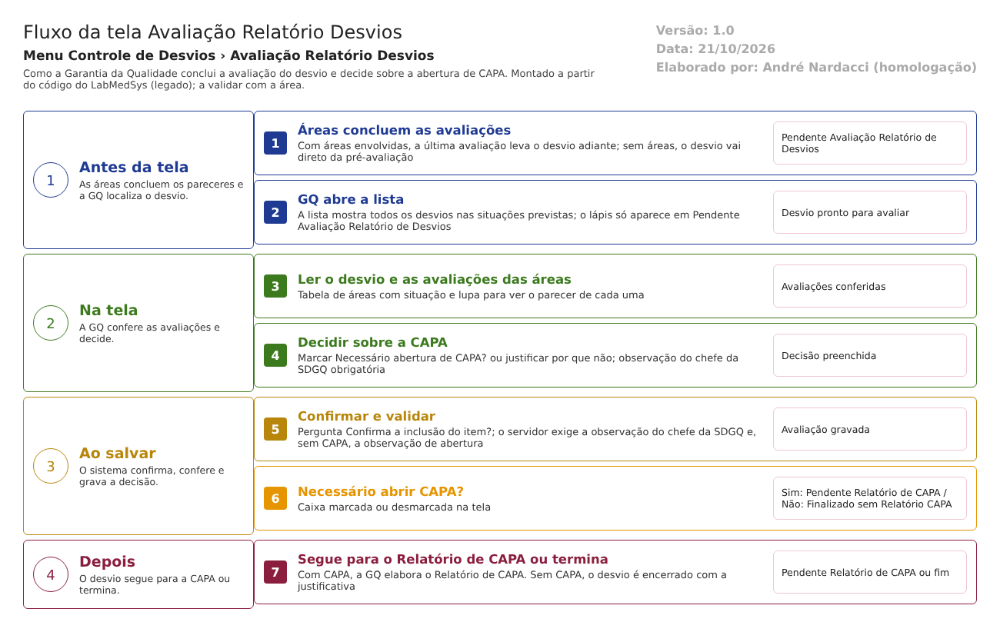

-
Antes da tela: as áreas envolvidas concluem as avaliações (ou, sem áreas, o desvio vai direto) e o desvio fica em Pendente Avaliação Relatório de Desvios.
-
Antes da tela: a GQ abre a lista; ela mostra todos os desvios nas situações previstas, com o lápis só no Pendente Avaliação Relatório de Desvios.
-
Na tela: a GQ lê o desvio e confere as avaliações das áreas (tabela com lupa).
-
Na tela: a GQ decide sobre a CAPA (caixa marcada ou justificativa) e escreve a observação do chefe da SDGQ.
-
Ao salvar: confirma e o servidor confere as observações e os anexos. Recusa se faltar algo.
-
Ao salvar: decisão, necessário abrir CAPA? Sim: Pendente Relatório de CAPA. Não: Finalizado sem Relatório CAPA.
-
Depois: com CAPA, a GQ elabora o Relatório de CAPA. Sem CAPA, o desvio termina aqui.
Saídas alternativas
- Recusa: observação do chefe da SDGQ vazia, ou observação de abertura de CAPA vazia com a caixa desmarcada: a mensagem aparece, nada é gravado e o desvio continua em Pendente Avaliação Relatório de Desvios.
- Cancelamento: não existe nesta tela. Voltar ou responder NÃO à confirmação não grava.
- Desvio já avaliado ou ainda sem as áreas: a lista oferece só a lupa.
O diagrama deste fluxo está no arquivo 05-avaliacao-relatorio-desvios.fluxo.json.
Situações e histórico
Situação de entrada
- Pendente Avaliação Relatório de Desvios (17): depois da pré-avaliação sem áreas, ou quando a última área avaliou (
HSolutions.GQ.Domain/Enumeradores/TipoSituacao.cs:41-42;HSolutions.GQ.UI/Areas/Bloco2/Controllers/AvaliacaoAreaRDController.cs:276). - Para consulta: Pendente Responsável Área, Finalizado sem Relatório CAPA sem CAPA e qualquer desvio com avaliação (
HSolutions.GQ.UI/Areas/Bloco2/Controllers/AvaliacaoRNCController.cs:61-62).
Situação de saída
- Pendente Relatório de CAPA (28), quando a caixa de CAPA está marcada (
HSolutions.GQ.UI/Areas/Bloco2/Controllers/AvaliacaoRNCController.cs:296;HSolutions.GQ.Domain/Enumeradores/TipoSituacao.cs:63-64). - Finalizado sem Relatório CAPA (34), quando a caixa está desmarcada (
HSolutions.GQ.UI/Areas/Bloco2/Controllers/AvaliacaoRNCController.cs:197;HSolutions.GQ.Domain/Enumeradores/TipoSituacao.cs:75-76). - Sem recusa de avaliação nem cancelamento nesta tela.
O que grava na trilha de auditoria (histórico)
- Na primeira avaliação, quatro registros manuais (e um quinto sem CAPA), com data e hora do servidor, usuário conectado e valor novo (
HSolutions.GQ.UI/Areas/Bloco2/Controllers/AvaliacaoRNCController.cs:207-323). - A mudança da situação do desvio, com valor antigo e novo, pela rotina geral (
HSolutions.GQ.Infrastructure/Repository/RepositoryBase.cs:296-362).
O que não grava
- A justificativa: sempre vazia (
HSolutions.GQ.UI/Areas/Bloco2/Controllers/AvaliacaoRNCController.cs:214,:333). - A data e o usuário gravados na própria avaliação (
Hsolutions.GQ.DB/Tables/TBL_AVALIACAO_RNC.sql:10-11) não são mostrados no histórico como campo. - O conteúdo da marcação "controle de mudança" tem valor sempre "Não".
- A avaliação criada (objeto novo) não gera o registro automático de inclusão: a lista é montada e não gravada (
HSolutions.GQ.Infrastructure/Repository/RepositoryBase.cs:389-390); por isso o código grava os registros manuais acima.
Dados
Tabelas do banco tocadas
| Tabela | Colunas principais | Chaves | O que acontece | Fonte |
|---|---|---|---|---|
| TBL_REGISTRO_RNC | Situacao, AvaliacaoRNC_Id, RelatorioCapa_Id, Justificativa | Chave ID_REGISTRO_RNC; AvaliacaoRNC_Id liga a TBL_AVALIACAO_RNC | Lida; a Situacao é atualizada | Hsolutions.GQ.DB/Tables/TBL_REGISTRO_RNC.sql:2-47; HSolutions.GQ.UI/Areas/Bloco2/Controllers/AvaliacaoRNCController.cs:197, :296 |
| TBL_AVALIACAO_RNC | NomeResponsavel, Observacao, Justificativa, Situacao, NecessarioAberturaControleMudanca, NecessarioAberturaCapa, DATA_CRIACAO | Chave ID_AVALIACAO_RNC | Gravada: uma linha por desvio avaliado | Hsolutions.GQ.DB/Tables/TBL_AVALIACAO_RNC.sql:2-19; HSolutions.GQ.Domain/Entities/Bloco2/ControleDesvios/AvaliacaoRNC.cs:11-22 |
| TBL_AREA_ENVOLVIDA e TBL_AVALIACAO_AREA_REGISTRO_DESVIO | IdAreaEnvolvida, Situacao, Observacao | Chaves próprias | Lidas, para a tabela de áreas | Hsolutions.GQ.DB/Tables/TBL_AREA_ENVOLVIDA.sql:2-19; HSolutions.GQ.UI/Areas/Bloco2/Models/PartialRelatorioDesvioModel.cs:393-405 |
| TBL_PRE_AVALIACAO_RNC | Observacao | Chave própria | Lida (observação da pré-avaliação) | HSolutions.GQ.UI/Areas/Bloco2/Models/PartialRelatorioDesvioModel.cs:181-182 |
| TBL_ITEM_REGISTRO_DESVIO, lotes e registros de entrada | TipoItem, Descricao | Chave própria | Lidas, para mostrar o item | HSolutions.GQ.UI/Areas/Bloco2/Models/PartialRelatorioDesvioModel.cs:194-240 |
| TBL_ANEXO | Arquivo, Descricao | Chave própria | Lida; o validador confere arquivo e descrição | HSolutions.GQ.Domain/Service/AvaliacaoRNCValidator.cs:24-37 |
| TBL_LOG_ALTERACAO_GQ e TBL_LOG_ALTERACAO_GQ_ITEM | Campo, ValorAntigo, ValorNovo, usuário, data, justificativa | Chave ID | Gravadas (histórico). O projeto de banco traz TBL_LOG_ALTERACAO e TBL_LOG_ALTERACAO_ITEM; A confirmar com o DBA (RN-GQ-005) | HSolutions.GQ.Context/Configurations/LogAlteracaoConfiguration.cs:16; Hsolutions.GQ.DB/Tables/TBL_LOG_ALTERACAO.sql:1-14 |
| Tabelas de grupo do usuário (as regras de acesso estão no documento interno) | Grupo do usuário | Chave própria | Lidas para decidir os ícones | HSolutions.GQ.UI/Controllers/GQControllerBase.cs:129-137; HSolutions.GQ.UI/Areas/Bloco2/Models/AvaliacaoRNCResultadoIndexModel.cs:47-51 |
O que lê ou grava em outros módulos
| Módulo | O que | Meio | Fonte |
|---|---|---|---|
| Principal | Lista de áreas (locais com responsável) e nome da área | API do Principal, GetAreas e GetAreaName |
HSolutions.GQ.Services/Principal/AreaService.cs:14-32; HSolutions.GQ.UI/Areas/Bloco2/Controllers/AvaliacaoRNCController.cs:120-121 |
| Principal | Nome do usuário conectado | Sessão e API do Principal | HSolutions.GQ.UI/Controllers/GQControllerBase.cs:58-71 |
| Principal | TAG do equipamento | API do Principal, ListEquipamentosPorDescricao |
HSolutions.GQ.UI/Areas/Bloco2/Controllers/ServiceBloco2.cs:53-71; HSolutions.GQ.Services/Principal/EquipamentoService.cs:13-39 |
| Principal | Responsáveis por área (ação ListarResponsaveisPorArea, sem uso nesta tela) |
API do Principal, GetResponsaveisPorArea |
HSolutions.GQ.UI/Areas/Bloco2/Controllers/AvaliacaoRNCController.cs:371-390; HSolutions.GQ.Services/Principal/AreaService.cs:44-52 |
| Produção ou Estoque | Nenhum: os lotes foram copiados para a GQ no registro | Não se aplica | HSolutions.GQ.UI/Areas/Bloco2/Models/PartialRelatorioDesvioModel.cs:217-240 |
| Controle de mudanças da GQ | Nenhum: a marcação de controle de mudança não abre solicitação | Não se aplica | HSolutions.GQ.UI/Areas/Bloco2/Controllers/AvaliacaoRNCController.cs:291 |